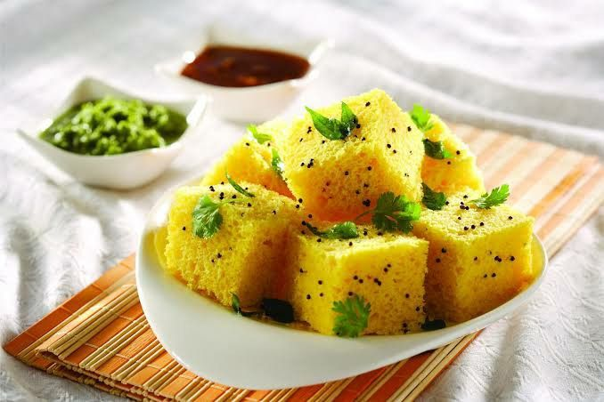

* ખીરું બનાવવા માટે:
- ૧ કપ બેસન (ચણા નો લોટ)
- ૧ ટેબલસ્પૂન સોજી (રવો), (વૈકલ્પિક)
- ૧&૧/૨ ટીસ્પૂન લીંબુનો રસ
- ૧ ટીસ્પૂન ઇનો પાઉડર (ઇનો ફ્રૂટ સોલ્ટ)
- ૧ ટીસ્પૂન લીલા મરચાં-આદું છીણેલા
- ૩/૪ કપ પાણી
- ૧/૪ કપ દહીં
- ૧ ટીસ્પૂન તેલ (થાળી ચીકણી કરવા માટે)
- ૧/૨ ટીસ્પૂન મીઠું, (અથવા સ્વાદ પ્રમાણે)
* વઘાર માટે:
- ૨ ટેબલસ્પૂન તેલ
- ૧૦-૧૫ લીમડાના પાન
- ૧/૨ ટીસ્પૂન રાઈ
- ૧/૨ ટીસ્પૂન જીરું, (વૈકલ્પિક)
- ૧ ટીસ્પૂન તલ
- ૧ ટેબલસ્પૂન ખાંડ
- ૪ લીલા મરચાં, લંબાઈમાં કાપેલા
- ૨ ટેબલસ્પૂન સમારેલા લીલા ધાણા>
- ૨ ટેબલસ્પૂન છીણેલું તાજું નારિયેળ, (વૈકલ્પિક)
- ૧ ચપટી હીંગ
- ૧/૩ કપ પાણી
|
ખીરું અને ઢોકળા બનાવવાની વિધિ:
- ઢોકળાનું ખીરું તૈયાર કરવા માટે બધી સામગ્રી તૈયાર રાખો. ઢોકળા બનાવવાના વાસણમાં (ઢોકળિયામાં) લગભગ ૨-૩ કપ પાણી નાખોં અને મધ્યમ આંચ પર ગરમ કરવા મૂકો. પ્લેટ રાખતા પહેલા ઢોકળા બનાવવાના વાસણને ઓછામાં ઓછી ૪-૫ મિનિટ માટે ગરમ કરો. ૨ નાની થાળીને (૪-૫ ઇંચ વ્યાસવાળી અથવા જે પણ ઢોકળા બનાવવાના વાસણમાં સરળતાથી રાખી શકાય) ૧ ટીસ્પૂન તેલ લગાવીને ચીકણી કરી લો.
- એક મોટા બાઉલમાં બેસન, સોજી, લીંબુનો રસ, લીલા મરચાં-આદુંની પેસ્ટ, દહીં, ૩/૪ કપ પાણી અને મીઠું નાખોં. તેને બરાબર ચમચીથી મિક્ષ કરો. ખીરામાં ગાંઠ ન હોવી જોઈએ.
- હવે તેમાં ઇનો પાઉડર નાખીને ૧ મિનિટ સુધી હલાવો, ખીરું લગભગ બેગણું થઈ જશે
- ૧૦-૧૨ મિનિટ પછી, ઢોકળામાં વચ્ચે એક ચાકૂ નાખીને જુઓ, જો ચાકૂમાં ખીરું ન ચિપકે, તો ઢોકળા ચડી (ચડી) ગયા છે નહીતર વધારે ૨-૩ મિનિટ સુધી પકાવો.
- ગેસને બંધ કરી દો. ઢોકળાની થાળી ઢોકળિયામાંથી બહાર કાઢો અને થોડી મિનિટ માટે ઠંડા થવા દો. ખમણ ઢોકળાને ચાકૂથી નાના નાના ટુકડાઓમાં કાપો
વઘાર બનાવવાની વિધિ:
- એક નાના પેનમાં ૨ ટેબલસ્પૂન તેલ ગરમ કરો. તેમાં રાઈ અને હીંગ નાખોં. જ્યારે તે ફૂટવા લાગે ત્યારે તેમાં જીરું, તલ, લીમડાના પાન અને લીલા મરચાં નાખીને થોડી સેકંડ
માટે સાંતળો
- તેમાં ૧/૩ કપ પાણી અને ખાંડ નાખોં અને તેને ઉકળવા મૂકો; એક ઊભરો આવે પછી એક મિનિટ માટે પકાવો. વઘાર તૈયાર છે તેને ઢોકળા પર નાખીને ઢોકળાને ધીમેથી ઉછાળો જેથી વઘાર બરાબર રીતે લાગી જાય.
- તેને કાપેલા લીલા ધાણા અને છીણેલા નારિયેળથી સજાવીને લીલા ધાણાની ચટણી સાથે પીરસો.
|